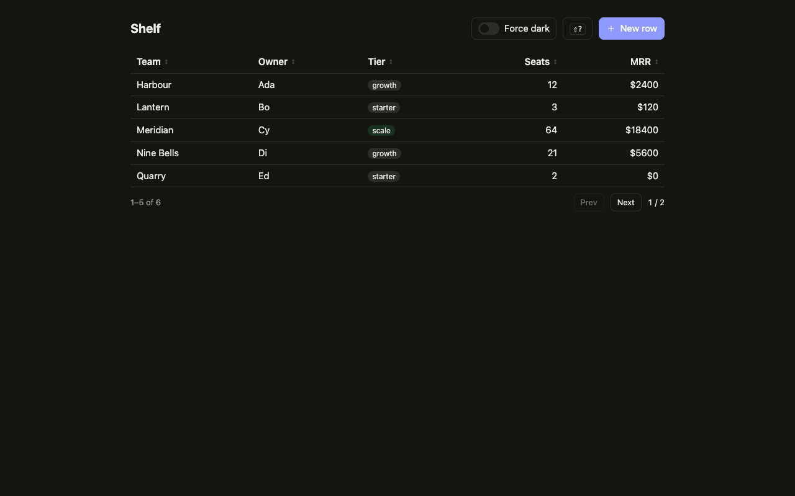

Stdlib
The opt-in shelf: every module on one page.

examples/stdlib — screenshot taken from webc dev.webc.json
{
"name": "stdlib",
"mode": "web",
"target": "wasm",
"client": ["src/app.c"],
"dev": { "port": 9992 }
}src/app.c
// examples/stdlib — the shelf, in one page.
//
// This app exists to answer one question an app author actually asks: what does a page
// look like when the standard library carries the parts nobody enjoys writing? Everything
// here that is *not* about rows, teams and a "new row" dialog belongs to a module:
//
// theme the tokens and the dark edition form the fields, from the model
// table the sort, the aria-sort and the pager keys one table of shortcuts
// overlay the dialog, the toast and the tip icons the icons on the buttons
// motion the rows arriving ui the switch and the badges
//
// The app's own job is left visible on purpose: three comparators, two actions, and the
// view. Everything else is one call, and `webc stdlib --used` counts what it took.
#include <webc/web.h>
#include <webc/icons.h>
#include <webc/form.h>
#include <webc/keys.h>
#include <webc/motion.h>
#include <webc/overlay.h>
#include <webc/table.h>
#include <webc/theme.h>
// ---------------------------------------------------------------- the model
WEBC_ENUM(Tier, starter, growth, scale)
WEBC_MODEL(Row,
(id, i64, .pk = true),
(team, str, .required = true, .max = 40),
(owner, str, .max = 40),
(tier, Tier, .not_null = true),
(seats, i32, .gte = 1, .lte = 500),
(mrr, f64, .gte = 0))
Vec(Row)
static VecRow g_rows;
static i64 g_next_id = 1;
// Five rows, so the pager has something to page through on the first paint.
static void seed_rows(void) {
static const struct {
const char *team, *owner;
Tier tier;
i32 seats;
f64 mrr;
} SEED[] = {
{"Harbour", "Ada", growth, 12, 2400},
{"Lantern", "Bo", starter, 3, 120},
{"Meridian", "Cy", scale, 64, 18400},
{"Nine Bells", "Di", growth, 21, 5600},
{"Quarry", "Ed", starter, 2, 0},
{"Saltmarsh", "Fay", growth, 34, 9100},
};
for (i32 i = 0; i < WC_ARRLEN(SEED); i++)
push(g_rows, (Row){.id = g_next_id++, .team = str_lit(SEED[i].team),
.owner = str_lit(SEED[i].owner), .tier = SEED[i].tier,
.seats = SEED[i].seats, .mrr = SEED[i].mrr});
}
// ---------------------------------------------------------------- the theme
//
// Four tokens, two editions. The page has no colour of its own anywhere else, which is
// what makes the dark edition one table instead of an audit.
static const WToken TOKENS[] = {
{"bg", "#fbfaf7", "#14150f"},
{"fg", "#1a1a18", "#eceae4"},
{"acc", "#3d4ee0", "#8f9aff"},
{"line", "#e4e1d9", "#2b2d26"},
};
static const WTheme THEME = {"shelf", TOKENS, WC_ARRLEN(TOKENS), "Inter, system-ui", nullptr};
static const WOverlay SHORTCUTS = {"keys_dlg", "Keyboard", "keys_close"};
// ---------------------------------------------------------------- state
state(i64, sort, 0);
state(i64, page, 0);
state(bool, open_new, false);
state(bool, open_keys, false);
state(bool, dark, false);
state(Text, toast_msg, "");
static i32 g_order[64];
// ---------------------------------------------------------------- comparators
//
// A column is a label, a number and an alignment. The table reads the row through the
// pointer, so these three lines are the whole of "this table sorts".
static f64 by_team(const void *r) { return (f64)strlen(((const Row *)r)->team.p); }
static f64 by_seats(const void *r) { return (f64)((const Row *)r)->seats; }
static f64 by_mrr(const void *r) { return ((const Row *)r)->mrr; }
static const WTableKey COLS[] = {
{"Team", by_team, nullptr},
{"Owner", nullptr, nullptr},
{"Tier", nullptr, nullptr},
{"Seats", by_seats, "right"},
{"MRR", by_mrr, "right"},
};
static WTable table(void) {
WTable t;
table_init(&t, g_rows.at, vlen(&g_rows), sizeof(Row), g_order);
table_keys(&t, COLS, WC_ARRLEN(COLS));
table_state(&t, get(sort), (i32)get(page), 5);
return t;
}
// … 312 more lines in the repositorypublic/index.html
<!doctype html>
<html lang="en">
<head>
<meta charset="utf-8">
<meta name="viewport" content="width=device-width, initial-scale=1">
<title>WebC · the standard library</title>
<link rel="stylesheet" href="/style.css">
</head>
<body>
<!-- mounted from wasm: theme tokens, the table, the dialog and the keys sheet are all
rendered by the modules this app includes -->
<div id="root"></div>
<script src="/webc.js"></script>
<script>
// the dialog's reset door (see app.c's new_open): set a form field's value
// property through the bridge — js() reads and calls, it does not set
function webc_set_value(id, value) { document.getElementById(id).value = value; }
(async () => {
await WebC.start({ el: '#root', wasm: '/app.wasm' });
})().catch((e) => {
document.querySelector('#root').textContent = 'wasm failed: ' + e.message;
console.error(e);
});
</script>
</body>
</html>public/style.css
/* theme: the page paints itself from the tokens theme_head() writes, and nothing here
names a colour: dark mode is `var(--bg)` already being something else. */
html {
background: var(--bg);
color: var(--fg);
font-family: var(--font-sans, system-ui, sans-serif);
-webkit-text-size-adjust: 100%;
}
body { margin: 0; }
code, kbd, pre, samp { font-family: var(--font-mono, ui-monospace, monospace); }
a { color: var(--acc); text-underline-offset: 2px; }
::selection { background: color-mix(in srgb, var(--acc) 28%, transparent); }
hr { border: 0; border-top: 1px solid var(--line); }
:focus-visible { outline: 2px solid var(--acc); outline-offset: 2px; }
/* icons: one line. An icon sits on the text baseline and takes the colour around it. */
.icon {
display: inline-block;
vertical-align: -0.155em;
flex: none;
}
/* an icon that is the whole content of a control */
.icon-btn {
display: inline-flex;
align-items: center;
justify-content: center;
gap: 0;
padding: 6px;
border: 0;
border-radius: 8px;
background: none;
color: inherit;
cursor: pointer;
}
.icon-btn:hover { background: color-mix(in srgb, currentColor 10%, transparent); }
/* ui: switch, segmented control, tab, meter, kbd, badge, stat, empty state, skeleton.
Colours come from the theme tokens; if a page has no theme, the fallbacks keep it
readable rather than grey-on-grey. */
.switch, .seg, .tab {
display: inline-flex; align-items: center; gap: 8px;
padding: 6px 10px; border: 1px solid var(--line, #ddd); border-radius: 8px;
background: none; color: inherit; font: inherit; cursor: pointer;
}
.switch .track {
width: 34px; height: 20px; border-radius: 999px; background: var(--line, #ddd);
position: relative; transition: background 120ms;
}
.switch .track::after {
content: ""; position: absolute; inset: 3px auto 3px 3px; width: 14px;
border-radius: 999px; background: var(--bg, #fff); transition: transform 120ms;
}
.switch.on .track { background: var(--acc, #3d4ee0); }
.switch.on .track::after { transform: translateX(14px); }
.seg.on, .tab.on { background: color-mix(in srgb, var(--acc, #3d4ee0) 12%, transparent); border-color: var(--acc, #3d4ee0); }
.seg-count { color: color-mix(in srgb, currentColor 55%, transparent); font-variant-numeric: tabular-nums; }
.meter { display: grid; gap: 4px; }
.meter-top { display: flex; justify-content: space-between; font-size: 13px; }
.meter-track { height: 6px; border-radius: 999px; background: var(--line, #eee); overflow: hidden; }
.meter-track > i { display: block; height: 100%; background: var(--acc, #3d4ee0); }
kbd {
padding: 1px 5px; border: 1px solid var(--line, #ddd); border-bottom-width: 2px;
border-radius: 5px; font-size: 12px; background: var(--bg, #fff);
}
.badge { padding: 1px 7px; border-radius: 999px; font-size: 12px; background: var(--line, #eee); }
.badge.ok { background: color-mix(in srgb, #2f9e5f 20%, transparent); }
.badge.warn { background: color-mix(in srgb, #c98a00 22%, transparent); }
.badge.bad { background: color-mix(in srgb, #cc3b3b 20%, transparent); }
.stat { display: grid; gap: 2px; }
.stat-label { font-size: 12px; color: color-mix(in srgb, currentColor 60%, transparent); }
.stat-value { font-size: 24px; font-variant-numeric: tabular-nums; }
.stat-delta.good { color: #2f9e5f; }
.stat-delta.bad { color: #cc3b3b; }
.empty {
display: grid; gap: 8px; justify-items: start;
padding: 28px; border: 1px dashed var(--line, #ddd); border-radius: 12px;
}
.empty-title { margin: 0; font-weight: 600; }
.empty-body { margin: 0; color: color-mix(in srgb, currentColor 65%, transparent); }
.skel { display: grid; gap: 8px; }
.skel > i {
display: block; height: 12px; border-radius: 6px;
background: linear-gradient(90deg, var(--line, #eee), color-mix(in srgb, var(--line, #eee) 40%, transparent), var(--line, #eee));
background-size: 200% 100%; animation: skel 1.4s linear infinite;
}
.skel > i:nth-child(3n) { width: 70%; }
.skel-card > i { height: 96px; }
.skel-row { grid-auto-flow: row; }
@keyframes skel { from { background-position: 100% 0; } to { background-position: -100% 0; } }
@media (prefers-reduced-motion: reduce) { .skel > i { animation: none; } }
/* table: header buttons that look like headers, and a pager that stays out of the way. */
table { border-collapse: collapse; width: 100%; }
th, td { text-align: left; padding: 7px 10px; border-bottom: 1px solid var(--line, #eee); }
th[data-align="right"], td[data-align="right"] { text-align: right; }
th[data-align="center"], td[data-align="center"] { text-align: center; }
.th-btn {
display: inline-flex; align-items: center; gap: 6px;
padding: 0; border: 0; background: none; color: inherit; font: inherit; font-weight: 600;
cursor: pointer;
}
/* … 104 more lines in the repository */